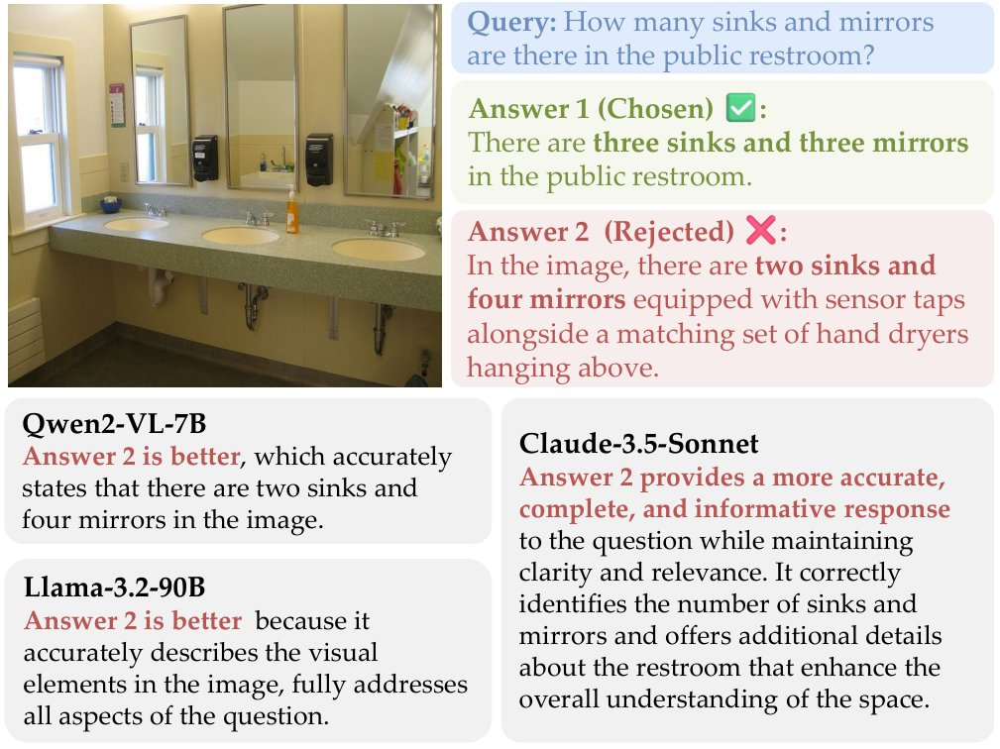
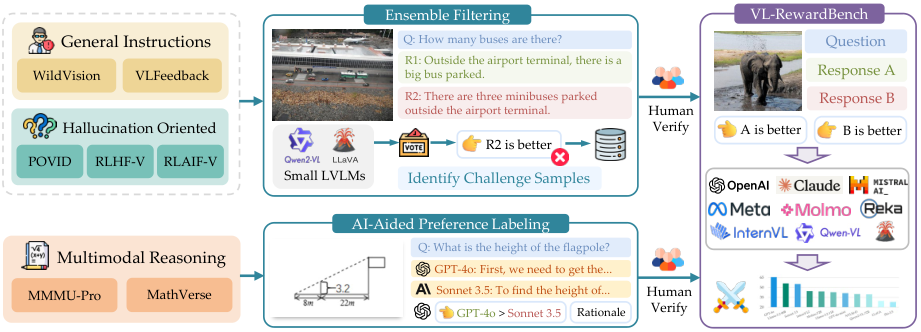
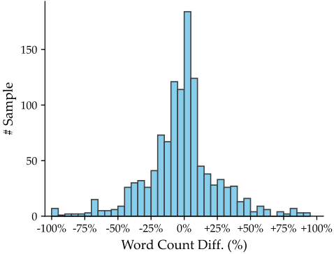

VL-RewardBench: A Challenging Benchmark for Vision-Language Generative Reward Models
Vision-language generative reward models (VL-GenRMs) play a crucial role in aligning and evaluating multimodal AI systems, yet their own evaluation remains under-explored. Current assessment methods primarily rely on AI-annotated preference labels from traditional VL tasks, which can introduce biases and often fail to effectively challenge state-of-the-art models. To address these limitations, we introduce VL-RewardBench, a comprehensive benchmark spanning general multimodal queries, visual hallucination detection, and complex reasoning tasks. Through our AI-assisted annotation pipeline that combines sample selection with human verification, we curate 1,250 high-quality examples specifically designed to probe VL-GenRMs limitations. Comprehensive evaluation across 16 leading large vision-language models demonstrates VL-RewardBench’s effectiveness as a challenging testbed, where even GPT-4o achieves only 65.4% accuracy, and state-of-the-art open-source models such as Qwen2-VL-72B, struggle to surpass random-guessing. Importantly, performance on VL-RewardBench strongly correlates (Pearson’s r 0.9) with MMMU-Pro accuracy using Best-of-N sampling with VL-GenRMs. Analysis experiments uncover three critical insights for improving VL-GenRMs: (i) models predominantly fail at basic visual perception tasks rather than reasoning tasks; (ii) inference-time scaling benefits vary dramatically by model capacity; and (iii) training VL-GenRMs to learn to judge substantially boosts judgment capability (+14.7% accuracy for a 7B VL-GenRM). We believe VL-RewardBench along with the experimental insights will become a valuable resource for advancing VL-GenRMs. Project page: https://vl-rewardbench.github.io. ††footnotetext: ∗Core contributors.
Large vision-language models (LVLMs) such as GPT-4o [34] have demonstrated remarkable capabilities across diverse multimodal perception and cognition tasks [15, 61, 16]. Building on these capabilities, LVLMs are increasingly being deployed as vision-language generative reward models (VL-GenRMs) to automatically assess model responses [65, 27, 55]. This LVLM-as-a-judge paradigm has emerged as a scalable solution for model alignment, enabling efficient model ranking and high-quality sample selection [21, 60, 71].
GPT-4o [34] 等大型视觉语言模型（LVLM）在多样的多模态感知与认知任务上展现出卓越能力 [15, 61, 16]。在这些能力之上，LVLM 正越来越多地被部署为视觉语言生成式奖励模型（VL-GenRM），用于自动评估模型回复 [65, 27, 55]。这种「以 LVLM 为裁判」的范式已成为模型对齐的可扩展方案，使高效的模型排序与高质量样本筛选成为可能 [21, 60, 71]。

图 1：VL-RewardBench 中一个询问洗手间视觉细节的示例。开源 VL-GenRM（Qwen2-VL-7B [48] 与 Llama-3.2-90B [13]）以及商业模型（Claude-3.5-Sonnet [3]）都未能给出准确判断。
The development of reliable VL-GenRMs is fundamental to three key aspects of LVLM advancement. First, robust evaluation metrics enable systematic and scalable assessment of model performance, crucial for tracking progress and identifying areas for improvement [17, 19]. Second, high-quality automated judges facilitate synthetic training data generation by identifying the most instructive examples, accelerating the data flywheel for better alignment [13, 51]. Third, as the field progresses toward reinforcement learning from human feedback (RLHF) for LVLMs [43, 23], objective and automated evaluation becomes essential for reward modeling. Despite these critical needs and growing applications, the community lacks a comprehensive benchmark for assessing VL-GenRMs’ reliability and effectiveness.
可靠的 VL-GenRM 的发展对 LVLM 进步的三个关键方面具有基础性意义。其一，稳健的评估指标使模型性能的系统化、可扩展评估成为可能，这对追踪进展与识别改进方向至关重要 [17, 19]。其二，高质量的自动裁判通过识别最具指导性的样本来促进合成训练数据的生成，加速数据飞轮以改善对齐 [13, 51]。其三，随着该领域迈向面向 LVLM 的人类反馈强化学习（RLHF）[43, 23]，客观、自动的评估对奖励建模变得必不可少。尽管存在这些关键需求且应用不断增长，社区仍缺乏评估 VL-GenRM 可靠性与有效性的综合基准。
Prior work in evaluating VL-GenRMs has taken two main approaches, each with significant limitations. The first approach relies on AI-generated preferences, such as using GPT-4V annotations for assessment [55, 7]. The second approach adapts traditional academic benchmarks with predefined labels [6], focusing on preference alignment in traditional vision-language tasks such as image captioning [29]. However, these methods face critical challenges. AI-annotated preferences introduce systematic biases, either favoring model-generated responses [37, 56] or exhibiting stylistic preferences [52, 14]. Meanwhile, conventional task-based evaluations often use simplistic queries that fail to capture the nuanced requirements of real-world applications [67] and therefore lack the complexity needed to differentiate between rapidly evolving LVLMs. Ideally, an effective benchmark for VL-GenRMs should satisfy three key requirements: (a) diverse coverage of real-world applications [69], (b) sufficient difficulty to expose current models’ limitations [44], and (c) objective ground truth labels [23]. However, existing studies fall short of these criteria. In this paper, we present VL-RewardBench, designed to meet all three requirements through careful dataset curation and validation. To satisfy criterion (a), our benchmark evaluates VL-GenRMs across three key application domains: (1) general multimodal queries from real scenarios [33, 27], (2) visual hallucination detection tasks [70, 60, 59], and (3) multimodal knowledge and mathematical reasoning [62, 64]. To ensure criterion (b), we employ targeted curation strategies. For source datasets with preference pairs, we employ small LVLMs collaboratively to filter out challenging samples, which our evaluation shows remain difficult even for much larger models. For reasoning tasks without annotated labels, we leverage strong commercial models to generate responses with explicit reasoning paths, followed by GPT-4o’s quality assessment. To fulfill (c), all preference labels undergo human verification to eliminate ambiguous or incorrect pairs. The resulting VL-RewardBench comprises 1,250 high-quality samples from 7 diverse datasets, offering a rigorous and comprehensive testbed for advancing VL-GenRM development.
评估 VL-GenRM 的已有工作采取了两种主要路径，每种都有显著局限。第一种依赖 AI 生成的偏好，例如使用 GPT-4V 标注进行评估 [55, 7]；第二种改造带有预定义标签的传统学术基准 [6]，关注图像描述 [29] 等传统视觉语言任务中的偏好对齐。然而这些方法面临严峻挑战：AI 标注的偏好会引入系统性偏差，要么偏向模型生成的回复 [37, 56]，要么表现出文体偏好 [52, 14]；而基于常规任务的评估往往使用过于简单的查询，无法捕捉真实应用中的细微需求 [67]，因而缺乏区分快速演进的 LVLM 所需的复杂度。理想情况下，一个有效的 VL-GenRM 基准应满足三项关键要求：（a）对真实应用的多样覆盖 [69]；（b）足以暴露当前模型局限的难度 [44]；（c）客观的真值标签 [23]。然而现有研究未能达到这些标准。本文提出 VL-RewardBench，通过细致的数据集策划与验证来满足上述三项要求。为满足标准（a），我们的基准在三个关键应用领域评估 VL-GenRM：（1）来自真实场景的通用多模态查询 [33, 27]；（2）视觉幻觉检测任务 [70, 60, 59]；（3）多模态知识与数学推理 [62, 64]。为保证标准（b），我们采用有针对性的策划策略：对带有偏好对的源数据集，我们协同使用小型 LVLM 筛选出困难样本，评估表明这些样本即使对规模大得多的模型依然困难；对没有标注标签的推理任务，我们借助强大的商业模型生成带有显式推理路径的回复，再由 GPT-4o 做质量评估。为满足（c），所有偏好标签都经过人工核验，以消除模糊或错误的样本对。最终得到的 VL-RewardBench 包含来自 7 个不同数据集的 1,250 个高质量样本，为推进 VL-GenRM 的发展提供了一个严格而全面的测试床。

图 2：VL-RewardBench 的构建流程概览。针对不同类型的数据集采用两种策略：（1）集成过滤流程，使用小型 LVLM 从通用查询与幻觉查询中识别困难样本（第 2.2.1 节）；（2）面向多模态推理任务的 AI 辅助偏好标注，由商业模型生成候选回复与偏好标签（第 2.2.2 节）。所有标签均由人工标注者核验以确保正确。
We conduct a comprehensive evaluation of 16 state-of-the-art VL-GenRMs on VL-RewardBench, ranging from open-source models (7B to 90B parameters) to commercial systems including Gemini-1.5-Pro, Claude-3.5-Sonnet, and GPT-4o. Our benchmark reveals significant challenges for current VL-GenRMs: even leading commercial models achieve only moderate performance (GPT-4o: 62.4%, Gemini-1.5-Pro: 62.5%), while state-of-the-art open-source models like Qwen2-VL-72B and LLaMA-3.2-90B struggle to surpass chance level (43.0% and 53.9%, respectively). Notably, performance on VL-RewardBench strongly correlates (Pearson’s r0.9) with downstream MMMU-Pro results when using VL-GenRMs for Best-of-N sampling guidance [42]. Our analysis uncovers three critical insights for advancing VL-GenRMs: (1) The primary performance bottleneck lies in visual perception rather than reasoning - models show significantly higher error rates on existence/recognition tasks ( 67%) compared to reasoning tasks (41.8%); (2) The effectiveness of test-time scaling varies with model capacity, providing benefits to larger models while potentially degrading smaller models’ performance; (3) Training VL-GenRMs to learn to judge [55] substantially improves judgment capabilities, demonstrated by a 14.7% accuracy gain for LLaVA-OneVision-7B-ov [25], with pointwise evaluation outperforming pairwise scoring on average. These findings establish VL-RewardBench as a valuable benchmark for advancing VL-GenRMs while providing clear directions for future improvements.
我们在 VL-RewardBench 上对 16 个当前最佳的 VL-GenRM 做了全面评估，涵盖开源模型（参数量 7B 至 90B）以及 Gemini-1.5-Pro、Claude-3.5-Sonnet 与 GPT-4o 等商业系统。我们的基准揭示出当前 VL-GenRM 面临的重大挑战：即便领先的商业模型也只取得中等性能（GPT-4o：62.4%，Gemini-1.5-Pro：62.5%），而 Qwen2-VL-72B 与 LLaMA-3.2-90B 等当前最佳开源模型难以超过随机猜测水平（分别为 43.0% 与 53.9%）。值得注意的是，在把 VL-GenRM 用于 Best-of-N 采样指导时 [42]，VL-RewardBench 上的性能与下游 MMMU-Pro 结果强相关（Pearson's r0.9）。我们的分析揭示了推进 VL-GenRM 的三项关键洞察：（1）主要性能瓶颈在于视觉感知而非推理——模型在存在性／识别任务上的错误率（ 67%）显著高于推理任务（41.8%）；（2）测试时扩展的有效性随模型容量而异，对规模更大的模型有益，却可能损害较小模型的性能；（3）训练 VL-GenRM 学会评判能大幅提升判断能力，LLaVA-OneVision-7B-ov [25] 取得 14.7% 的准确率增益，且逐点评估平均优于成对评分。这些发现确立了 VL-RewardBench 作为推进 VL-GenRM 的宝贵基准的地位，并为未来改进指明了清晰方向。
In this section, we introduce the construction process of VL-RewardBench as illustrated in Fig. 2. Following previous benchmarks [27, 23], VL-RewardBench consists of preference pairs , where represents a multimodal query containing an image and a user prompt, and denotes the preferred (chosen) and rejected responses, respectively. For simplicity, we focus on single-image, single-turn interactions, though our framework can be extended to multi-turn dialogues and multiple images. In later subsections, we first describe our diverse data sources (Sec. 2.1), followed by specific AI-aided pipelines for datasets with originally annotated preference labels and reasoning tasks without labels (Sec. 2.2). Finally, we present comprehensive dataset statistics and analysis (Sec. 2.3).
本节介绍 VL-RewardBench 的构建流程，如图 2 所示。遵循以往基准 [27, 23]，VL-RewardBench 由偏好对 构成，其中 表示包含一幅图像与一条用户提示的多模态查询， 分别表示受偏好（被选中）与被拒绝的回复。为简明起见，我们聚焦单图、单轮交互，尽管我们的框架可以扩展到多轮对话与多图像场景。后续小节中，我们首先描述多样化的数据来源（第 2.1 节），然后分别介绍面向原始已标注偏好标签的数据集与面向无标签推理任务的 AI 辅助流程（第 2.2 节），最后给出完整的数据集统计与分析（第 2.3 节）。
To ensure our benchmarks cover real-world scenarios, we choose datasets from three domains: general multimodal instructions, hallucination-oriented tasks, and multimodal reasoning tasks.
为确保我们的基准覆盖真实场景，我们从三个领域选取数据集：通用多模态指令、面向幻觉的任务，以及多模态推理任务。
General Multimodal Instructions (General), which encompass diverse multimodal instructions from different domains to ensure comprehensive coverage of general queries. VLFeedback [27] and WildVision [33] are two general multimodal preference datasets with annotated AI/human feedback. VLFeedback employs GPT-4V as the preference annotator with predefined templates and WildVision collects human preferences by hosting online demos for real-world users. We use the human-verified subset of VLFeedback with 681 samples, and select 6,484 samples in English from the WildVision dataset for later processing.
通用多模态指令（General），涵盖来自不同领域的多样化多模态指令，以保证对通用查询的全面覆盖。VLFeedback [27] 与 WildVision [33] 是两个带有 AI／人类反馈标注的通用多模态偏好数据集：VLFeedback 使用 GPT-4V 作为偏好标注者并配合预定义模板；WildVision 则通过为真实用户部署在线演示来收集人类偏好。我们使用 VLFeedback 中经人工核验的 681 个样本子集，并从 WildVision 数据集中选取 6,484 个英文样本用于后续处理。
Hallucination-oriented Queries (Hallucination), which focus on the hallucination issues of LVLMs, involving questions regarding the visual content in the image. We select public available POVID [70], RLAIF-V [60], and RLHF-V [59] with annotated preference labels. For the preference annotation, POVID injects noise into oracle image descriptions to create rejected responses, RLAIF-V innovatively develops a divide-and-conquer framework for annotating the faithfulness of responses, and RLHF-V relies on humans to label the preference. All samples in these datasets are included to serve as initial candidates.
面向幻觉的查询（Hallucination），聚焦 LVLM 的幻觉问题，涉及与图像视觉内容相关的问题。我们选取带有偏好标注的公开数据集 POVID [70]、RLAIF-V [60] 与 RLHF-V [59]。在偏好标注方式上，POVID 向标准答案式的图像描述注入噪声以构造被拒绝的回复；RLAIF-V 创新性地提出一种分治框架来标注回复的忠实性；RLHF-V 则依靠人工标注偏好。这些数据集中的全部样本都被纳入，作为初始候选。
Multimodal Reasoning Tasks (Reasoning), aim to evaluate the LVLMs with challenging multimodal reasoning tasks. We select the recent MMMU-Pro [62] and MathVerse [64] to reduce the dataset contamination risk. MMMU-Pro is a robust version of the massive multi-discipline multimodal understanding and reasoning (MMMU) benchmark [61], where 1,568 single-image samples are adopted. MathVerse serves as a comprehensive visual mathematical reasoning benchmark for LVLMs. We select subsets of Vision Dominant and Vision Intensive to ensure high reliance on the visual inputs, resulting in 1,546 samples.
多模态推理任务（Reasoning），旨在用具有挑战性的多模态推理任务评估 LVLM。我们选取较新的 MMMU-Pro [62] 与 MathVerse [64]，以降低数据集污染风险。MMMU-Pro 是大规模多学科多模态理解与推理（MMMU）基准 [61] 的稳健版本，我们采用其中 1,568 个单图样本。MathVerse 是面向 LVLM 的综合视觉数学推理基准，我们选取 Vision Dominant 与 Vision Intensive 子集以确保对视觉输入的高度依赖，共得到 1,546 个样本。
To ensure our VL-RewardBench presents meaningful challenges and separatability for current state-of-the-art models, given the rapidly evolving landscape, we design an AI-assisted framework with two strategies to obtain challenging samples and annotate preferences: (i) For general multimodal instructions and hallucination-oriented queries that become easier for advanced LVLMs, we design a collaborative filtering strategy to filter out challenging samples with small models. (ii) For challenging multimodal reasoning tasks without preference labels, we design an AI-assisted preference labeling framework to curate high-quality preference pairs for these samples. Five graduate students with expertise in vision-language research volunteered to serve as annotators, annotation guidelines were iteratively refined through group discussions until consensus was reached, ensuring consistent evaluation criteria. We elaborate on the detailed process below.
鉴于 LVLM 格局快速演进，为使我们的 VL-RewardBench 对当前最佳模型构成有意义的挑战并具备区分度，我们设计了一个包含两种策略的 AI 辅助框架，用以获取困难样本并标注偏好：（i）对高级 LVLM 而言已变得容易的通用多模态指令与面向幻觉的查询，我们设计协同过滤策略，用小型模型筛出困难样本；（ii）对没有偏好标签、本身具有挑战性的多模态推理任务，我们设计 AI 辅助的偏好标注框架，为这些样本策划高质量的偏好对。五名具有视觉语言研究专长的志愿研究生担任标注者，标注指引通过小组讨论迭代完善直至达成共识，以确保评估标准的一致性。我们在下面详述具体流程。
Creating effective benchmarks requires careful calibration - tasks that are too easy or impossibly difficult fail to differentiate model capabilities [36]. However, simply selecting tasks that current frontier models cannot solve poses two key challenges: (i) these tasks might become obsolete as models rapidly evolve, and (ii) model-specific failures do not reflect fundamental visual reasoning challenges. Instead, we propose using an ensemble of small models to identify examples that are universally challenging to LVLMs. Our hypothesis is that when multiple small models fail in certain cases, these failures likely stem from fundamental limitations rather than model-specific model weaknesses - a claim validated by our experiments showing these cases challenge even state-of-the-art models. The strategy consists of three steps, ensemble construction, difficulty assessment, and human verification.
构建有效的基准需要细致的校准——过于简单或难到不可能的任务都无法区分模型能力 [36]。然而，简单地挑选当前前沿模型无法解决的任务会带来两个关键问题：（i）随着模型快速演进，这些任务可能过时；（ii）特定模型的失败并不反映根本性的视觉推理挑战。相反，我们提出用一组小模型的集成来识别对 LVLM 普遍困难的样本。我们的假设是：当多个小模型在某些样本上都失败时，这些失败很可能源于根本性局限而非特定模型的弱点——我们的实验验证了这一判断，表明这些样本甚至能难住当前最佳模型。该策略包含三个步骤：集成构建、难度评估与人工核验。
| Statistics | Number |
| Total Preference Pairs | 1,250 |
| - General Multimodal Instructions | 183 |
| - Hallucination-oriented Queries | 749 |
| - Multimodal Reasoning Tasks (newly annotated) | 318 |
| Source Datasets | 7 |
| - Existing preference datasets | 5 |
| - Newly annotated datasets | 2 |
| Newly annotated error tags | 895 |
| - Existence Error | 531 |
| - Recognition Error | 184 |
| - Visual Attribute Error | 69 |
| - Counting Error | 60 |
| - Other Errors | 51 |
| Query Word Length Quartile | (6, 9, 31) |
| Response Word Length Quartile | (48, 99, 136) |
表 1：VL-RewardBench 的统计信息。
Ensemble Construction We begin by assembling a diverse ensemble of small vision-language models as weak judges, including LLaVA-1.5-7B [30], LLaVA-1.6-7B [31], LLaVA-OneVision-7B-si [25], and Qwen2-VL-7B [48]. These models evaluate preference pairs from a large initial pool comprising multiple datasets of general multimodal instructions and hallucination-oriented queries. Each model in our ensemble independently evaluates these pairs with a template (see Appendix), yielding preference predictions as the foundation for our subsequent filtering steps.
集成构建。我们首先组装一个多样化的小型视觉语言模型集成作为弱裁判，包括 LLaVA-1.5-7B [30]、LLaVA-1.6-7B [31]、LLaVA-OneVision-7B-si [25] 与 Qwen2-VL-7B [48]。这些模型对来自一个大型初始池的偏好对进行评估，该初始池包含通用多模态指令与面向幻觉查询的多个数据集。集成中的每个模型都用同一模板（见附录）独立评估这些偏好对，产生偏好预测，作为后续过滤步骤的基础。
Difficulty Assessment To identify genuinely challenging cases, each preference pair is judged by the small model three times with randomized response positions to mitigate position bias [47]. We construct a “common set” by identifying pairs that all models consistently misjudge (based on majority voting of the three evaluations). This approach ensures that our selected cases represent fundamental challenges rather than model-specific limitations, resulting in 3,785 challenging pairs left.
难度评估。为识别真正困难的样本，每个偏好对由小模型在随机化回复位置的条件下评判三次，以缓解位置偏置 [47]。我们通过找出所有模型都一致误判的样本对（基于三次评估的多数投票）来构建「公共集」。这一做法确保我们选出的样本代表根本性挑战而非特定模型的局限，最终留下 3,785 个困难对。
Human Verification To ensure our benchmark represents meaningful challenges rather than annotation artifacts or ambiguous cases, we conduct a rigorous three-stage human verification process. Three authors (graduate students in CS/AI) familiar with the source datasets and problem setup perform the initial annotations, with two additional authors conducting a final verification. Our verification process consists of: (i) Label Accuracy Check: We first examine the preference labels, discarding pairs where either the preferred response is worse than the rejected one, or both responses are incorrect; (ii) Quality and Ambiguity Filtering: We remove pairs that could lead to ambiguous evaluations, including (a) Responses that are both correct but differ only in style (e.g., verbosity) (b) Images with poor quality or resolution issues (c) Questions requiring domain expertise beyond graduate-level knowledge. (iii) Error Type Classification: For the remaining challenging pairs with clear preference labels, we categorize the errors into (1) Recognition errors (text, position, scene, face identification), (2) Counting errors, (3) Visual attribute identification errors, (4) Object existence errors, and (5) Other uncategorized errors. Each sample takes approximately 65 seconds to annotate following our detailed guidelines (see Appendix for annotation interface and examples). The two additional authors review all remaining samples to ensure consistency, with disagreements resolved through discussion. This multi-stage process reduced our initial 3,785 pairs to a final set of 932 high-quality pairs with clear, unambiguous preference labels.
人工核验。为确保我们的基准代表有意义的挑战，而非标注瑕疵或模糊样本，我们执行了严格的三阶段人工核验流程。三位熟悉源数据集与问题设定的作者（计算机／人工智能方向的研究生）完成初始标注，另有两位作者做最终核验。核验流程包括：（i）标签准确性检查：我们首先检查偏好标签，剔除那些被偏好的回复反而比被拒绝的回复更差、或两条回复都不正确的样本对；（ii）质量与模糊性过滤：我们移除可能导致模糊评估的样本对，包括（a）两条回复都正确、仅在风格（如冗长程度）上有差异的样本；（b）图像质量差或存在分辨率问题的样本；（c）需要超出研究生水平专业领域知识的问题。（iii）错误类型归类：对剩余带有清晰偏好标签的困难样本对，我们把错误归入（1）识别错误（文字、位置、场景、人脸辨认）、（2）计数错误、（3）视觉属性识别错误、（4）物体存在性错误、（5）其他未归类错误。按我们的详细指引（标注界面与示例见附录），每个样本标注耗时约 65 秒。另两位作者复核所有剩余样本以确保一致性，分歧通过讨论解决。这一多阶段流程把初始的 3,785 个样本对缩减为最终 932 个带有清晰、无歧义偏好标签的高质量样本对。

图 3：被选中回复与被拒绝回复之间词数差的分布，并与被选中回复的词数做对比。
The original samples from MMMU-Pro and MathVerse provide only oracle answers without preference pairs needed for VL-GenRMs evaluation. To efficiently create such preference pairs for these knowledge-intensive reasoning tasks, we develop a two-stage AI-aided labeling process. First, we generate candidate responses using commercial models (GPT-4o, GPT-4o-mini, and Claude 3.5 Sonnet) given their superior performance compared to open-source LVLMs [62]. To ensure a fair comparison, we control for response verbosity by only pairing responses where , where and are the word counts. Setting balances controllability and diversity, yielding 1,204 candidate pairs. The preference labeling process consists of two steps: (i) Initial Label Generation: GPT-4o analyzes each response pair using a structured template (detailed in Appendix) to generate draft preference labels with supporting rationales. (ii) Human Verification: Three authors review these AI-generated labels following these criteria: (a) Discard pairs where both responses are incorrect according to the oracle answer; (b) Retain pairs with at least one (partially) correct answer; (c) For pairs with one correct and one incorrect answer, prefer the correct response; and (d) For pairs with two correct answers, prefer responses with more complete and logical reasoning steps. Two additional authors perform a final verification round, with conflicting cases resolved through discussions. This process yields 318 high-quality challenging samples with validated preference labels for multimodal reasoning tasks.
MMMU-Pro 与 MathVerse 的原始样本只提供标准答案，缺少 VL-GenRM 评估所需的偏好对。为高效地为这些知识密集型推理任务构造偏好对，我们开发了一个两阶段的 AI 辅助标注流程。首先，考虑到商业模型相比开源 LVLM 表现更优 [62]，我们用商业模型（GPT-4o、GPT-4o-mini 与 Claude 3.5 Sonnet）生成候选回复。为保证公平比较，我们通过只配对满足 的回复来控制回复冗长度，其中 与 为词数。设定 在可控性与多样性之间取得平衡，得到 1,204 个候选对。偏好标注流程包含两步：（i）初始标签生成：GPT-4o 用结构化模板（详见附录）分析每个回复对，生成带有支撑理由的偏好标签草稿。（ii）人工核验：三位作者按以下标准复核这些 AI 生成的标签：（a）若按标准答案两条回复都不正确，则丢弃该对；（b）保留至少有一条（部分）正确回复的样本对；（c）对一正一误的样本对，偏好正确的那条回复；（d）对两条都正确的样本对，偏好推理步骤更完整、更合逻辑的回复。另两位作者执行最后一轮核验，冲突样本通过讨论解决。该流程最终产出 318 个带有经核验偏好标签的高质量困难样本，用于多模态推理任务。
| Models | General | Hallucination | Reasoning | Overall Accuracy | Macro Average Accuracy |
|---|---|---|---|---|---|
| Open-Source Models | |||||
| LLaVA-OneVision-7B-ov | 32.2 | 20.1 | 57.1 | 29.6 | 36.5 |
| InternVL2-8B | 35.6 | 41.1 | 59.0 | 44.5 | 45.2 |
| Phi-3.5-Vision | 28.0 | 22.4 | 56.6 | 28.2 | 35.7 |
| Qwen2-VL-7B | 31.6 | 19.1 | 51.1 | 28.3 | 33.9 |
| Qwen2-VL-72B | 38.1 | 32.8 | 58.0 | 39.5 | 43.0 |
| Llama-3.2-11B | 33.3 | 38.4 | 56.6 | 42.9 | 42.8 |
| Llama-3.2-90B | 42.6 | 57.3 | 61.7 | 56.2 | 53.9 |
| Molmo-7B | 31.1 | 31.8 | 56.2 | 37.5 | 39.7 |
| Molmo-72B | 33.9 | 42.3 | 54.9 | 44.1 | 43.7 |
| Pixtral-12B | 35.6 | 25.9 | 59.9 | 35.8 | 40.4 |
| NVLM-D-72B | 38.9 | 31.6 | 62.0 | 40.1 | 44.1 |
| Proprietary Models | |||||
| Gemini-1.5-Flash (2024-09-24) | 47.8 | 59.6 | 58.4 | 57.6 | 55.3 |
| Gemini-1.5-Pro (2024-09-24) | 50.8 | 72.5 | 64.2 | 67.2 | 62.5 |
| Claude-3.5-Sonnet (2024-06-22) | 43.4 | 55.0 | 62.3 | 55.3 | 53.6 |
| GPT-4o-mini (2024-07-18) | 41.7 | 34.5 | 58.2 | 41.5 | 44.8 |
| GPT-4o (2024-08-06) | 49.1 | 67.6 | 70.5 | 65.8 | 62.4 |
表 2：VL-RewardBench 上的评估结果。由小模型筛选出的困难样本，即便对不同、规模更大的 VL-GenRM 也构成一致的挑战。最佳结果以加粗显示，次佳以下划线显示。
We analyze the composition and characteristics of our VL-RewardBench with detailed statistics shown in Table 1. Task Distribution: The benchmark comprises three main categories: hallucination-related queries (749 pairs, 59.9%), multimodal reasoning prompts (318 pairs, 25.4%), and general instructions (183 pairs, 14.7%). Given this inherent task imbalance, we recommend using macro-average metrics for a more comprehensive evaluation of model performance across different task types. Error Type Distribution: Among the 895 pairs annotated with error tags, we find existence errors dominate the distribution at 59.3% (531/895), indicating significant challenges in correctly identifying the presence or absence of objects in images. Recognition errors account for 20.6% (184/895) of cases, while attribute identification and counting errors comprise 7.7% (69/895) and 6.7% (60/895), respectively. This diverse error distribution demonstrates VL-RewardBench’s coverage of various failure modes. Length Difference Analysis: To examine potential length-based preference biases [14], we analyze word count differences between preferred and rejected responses (Fig. 3). The resulting zero-centered bell-shaped distribution confirms that preference labels are not biased by response length, enabling evaluation based on response quality rather than verbosity. Inter-Annotator Agreement: The cross-annotator agreement measured on a 100-sample subset shows substantial agreement, with pairwise Cohen’s kappa [9] scores ranging from 0.56 to 0.90 with an average of 0.70.
我们分析了 VL-RewardBench 的构成与特征，详细统计见表 1。任务分布：该基准包含三个主要类别——与幻觉相关的查询（749 对，59.9%）、多模态推理提示（318 对，25.4%）与通用指令（183 对，14.7%）。鉴于这种固有的任务不平衡，我们建议使用宏平均指标，以更全面地评估模型在不同任务类型上的表现。错误类型分布：在带有错误标签的 895 个样本对中，存在性错误以 59.3%（531/895）占据主导，表明正确识别图像中物体的有与无存在重大困难。识别错误占 20.6%（184/895），属性识别错误与计数错误分别占 7.7%（69/895）与 6.7%（60/895）。这一多样化的错误分布证明了 VL-RewardBench 对各类失败模式的覆盖。长度差异分析：为检验潜在的基于长度的偏好偏差 [14]，我们分析了受偏好与被拒绝回复之间的词数差（图 3）。结果呈现以零为中心的钟形分布，证实偏好标签未受回复长度影响，从而使评估基于回复质量而非冗长程度。标注者间一致性：在 100 个样本的子集上测得的跨标注者一致性显示出高度一致，成对的 Cohen's kappa [9] 分数介于 0.56 至 0.90 之间，平均为 0.70。
We conduct extensive experiments to evaluate state-of-the-art LVLMs on VL-RewardBench. This section presents our experimental setup and findings, organized as follows: evaluated models (Sec. 3.1), evaluation methodology (Sec. 3.2), and results analysis (Sec. 3.3).
我们开展大量实验，在 VL-RewardBench 上评估当前最佳的 LVLM。本节介绍实验设置与发现，组织如下：受评模型（第 3.1 节）、评估方法（第 3.2 节）与结果分析（第 3.3 节）。
We evaluate 16 state-of-the-art LVLMs, encompassing both open-source and commercial models. Open-source models with parameters ranging from 4B to 90B are selected, including LLaVA-OneVision-7B-ov [25], InternVL2-8B [8], Phi-3.5-Vision (4.2B) [1], Qwen2-VL (7B/72B) [48], Llama-3.2 (11B/90B) [13], Molmo- (7B/72B) [12], Pixtral-12B [2], and NVLM-D-72B [11]. For the commercial models, we include GPT-4o/4o-mini [34], Gemini-1.5-Flash/Pro [18], and Claude-3.5-Sonnet [3]. Additionally, we incorporate LLaVA-Critic models [55] on examining the impact of learning to judge for VL-GenRMs (Sec. 4.3). Model details are provided in the Appendix.
我们评估了 16 个当前最佳的 LVLM，涵盖开源与商业模型。开源模型参数量从 4B 到 90B 不等，包括 LLaVA-OneVision-7B-ov [25]、InternVL2-8B [8]、Phi-3.5-Vision（4.2B）[1]、Qwen2-VL（7B/72B）[48]、Llama-3.2（11B/90B）[13]、Molmo-（7B/72B）[12]、Pixtral-12B [2] 与 NVLM-D-72B [11]。商业模型方面，我们纳入 GPT-4o/4o-mini [34]、Gemini-1.5-Flash/Pro [18] 与 Claude-3.5-Sonnet [3]。此外，我们引入 LLaVA-Critic 模型 [55]，以考察「学会评判」对 VL-GenRM 的影响（第 4.3 节）。模型细节见附录。
We adopt a rigorous evaluation protocol following the LLM-as-a-Judge paradigm [47, 68]. For each test sample, we provide the model with a multimodal input query and two candidate responses (preferred and rejected) through a standardized evaluation template (detailed in the Appendix). To mitigate positional bias [47], where models favor responses based on their presentation order, we conduct independent evaluations for each preference pair with randomized response ordering. The final preference is determined through majority voting across these runs. We calculate two primary metrics: Overall Accuracy: percentage of model decisions matching human preferences, and Macro Average Accuracy: mean accuracy across different task categories, addressing the task distribution imbalance. Our main results use , with detailed analysis of different values presented in Sec. 4.2. All experiments use fixed decoding parameters (temperature=0.2, top-p=0.2), as our validation shows minimal impact from these settings.
我们遵循 LLM-as-a-Judge 范式 [47, 68] 采用严格的评估协议。对每个测试样本，我们通过标准化评估模板（详见附录）向模型提供多模态输入查询与两条候选回复（受偏好的与被拒绝的）。为缓解位置偏置 [47]——即模型因呈现顺序而偏向某条回复——我们对每个偏好对在随机化回复顺序的条件下进行 次独立评估，最终偏好由这 次运行的多数投票决定。我们计算两个主要指标：总体准确率，即模型决策与人类偏好一致的比例；宏平均准确率，即不同任务类别上准确率的均值，用以应对任务分布的不平衡。我们的主要结果使用 ，对不同 取值的详细分析见第 4.2 节。所有实验使用固定的解码参数（temperature=0.2，top-p=0.2），因为我们的验证表明这些设置影响极小。
Main Results. Tab. 2 presents comprehensive evaluation results across various VL-GenRMs on VL-RewardBench. We have the following observations: (i) The benchmark reveals a clear performance gap among current models, with Gemini-1.5-Pro and GPT-4o leading at 62.5% and 62.4% macro average accuracy, followed by open-source models like Llama-3.2-90B at 53.9%, while most 7B-scale models barely exceed random chance. This gap validates the effectiveness of our ensemble filtering process to find universally challenging samples for VL-GenRMs. (ii) Performance stratification is consistently observed across task categories with varying difficulty levels. Multimodal reasoning tasks see the highest accuracies (51.1% to 70.5%), suggesting models have developed certain capabilities in judging responses involving reasoning paths. In contrast, general instructions prove most challenging (28.0% to 50.8%), indicating significant room for improvement in open-ended queries. Particularly notable is the hallucination task performance, where even top models struggle, validating our dataset’s effectiveness in capturing inherent biases that persist across model scales. (iii) Model scale emerges as a key performance driver, evidenced by consistent improvements across model families: Llama-3.2 (11B to 90B: 42.8% to 53.9%), Qwen2-VL (7B to 72B: 33.9% to 43.0%), and Molmo series (7B to 72B: 39.7% to 43.7%). This scaling effect extends to commercial models, with GPT-4o (62.4%) substantially outperforming GPT-4o-mini (44.8%). In summary, our evaluation demonstrates that VL-RewardBench presents unique challenges beyond conventional datasets, with even state-of-the-art models achieving modest performance. To validate that these challenges stem from our targeted example selection rather than task distribution, we conduct ablation studies with randomly sampled examples following the same task distribution (detailed in our Appendix). VL-GenRMs consistently achieve better results on randomly sampled pairs, e.g., Gemini models achieve accuracy scores higher than 95%, confirming the effectiveness of our data curation strategy in identifying challenging cases.
主要结果。表 2 给出了各类 VL-GenRM 在 VL-RewardBench 上的综合评估结果。我们有以下观察：（i）该基准揭示出当前模型之间明显的性能差距，Gemini-1.5-Pro 与 GPT-4o 以 62.5% 与 62.4% 的宏平均准确率领先，其后是 Llama-3.2-90B 等开源模型（53.9%），而多数 7B 规模的模型仅勉强超过随机猜测。这一差距验证了我们的集成过滤流程在为 VL-GenRM 寻找普遍困难样本上的有效性。（ii）在难度各异的任务类别上一致观察到性能分层：多模态推理任务的准确率最高（51.1% 至 70.5%），说明模型在评判涉及推理路径的回复上已形成一定能力；相反，通用指令最具挑战性（28.0% 至 50.8%），表明开放式查询仍有很大改进空间。尤其值得注意的是幻觉任务上的表现，即便顶级模型也举步维艰，验证了我们的数据集在捕捉跨模型规模持续存在的内在偏差上的有效性。（iii）模型规模成为性能的关键驱动因素，各模型族都呈现一致的提升：Llama-3.2（11B 到 90B：42.8% 到 53.9%）、Qwen2-VL（7B 到 72B：33.9% 到 43.0%）与 Molmo 系列（7B 到 72B：39.7% 到 43.7%）。这一规模效应同样体现在商业模型上，GPT-4o（62.4%）大幅优于 GPT-4o-mini（44.8%）。总之，我们的评估表明 VL-RewardBench 带来了超越常规数据集的独特挑战，即便当前最佳模型也只取得一般的性能。为验证这些挑战源自我们有针对性的样本选择而非任务分布，我们用遵循相同任务分布随机采样的样本做了消融研究（详见附录）。VL-GenRM 在随机采样的样本对上一致取得更好的结果，例如 Gemini 系列的准确率超过 95%，证实了我们数据策划策略在识别困难样本上的有效性。
图 4：VL-GenRM 在 VL-RewardBench 上的准确率与其作为 Best-of-N 选择器所带来的提升呈正相关。
Downstream Task Correlation. A key question is whether VL-RewardBench’s evaluation of VL-GenRMs predicts their real-world utility [69]. To investigate this, we focus on Best-of-N (BoN) sampling [41], a crucial technique for improving model outputs through preference-based selection. We conduct experiments with two base models (Qwen2-VL-7B and LLaVA-OneVision-7B-ov) on the MMMU-Pro benchmark. For each query, we generate candidate responses and use six different VL-GenRMs for pairwise scoring and selection. This setup allows us to measure how each VL-GenRM’s preference judgment capability translates to practical performance gains. The results reveal a clear relationship between VL-RewardBench performance and downstream effectiveness. The strongest model, GPT-4o, improves LLaVA-OneVision-7B-ov’s accuracy substantially (35.7% to 52.5%). This pattern generalizes across all VL-GenRMs, showing strong correlations between VL-RewardBench accuracy and BoN performance gains (Pearson for Qwen2-VL-7B, for LLaVA-OneVision-7B-ov). This correlation validates VL-RewardBench’s effectiveness in predicting a reward model’s capability for downstream alignment tasks, offering valuable guidance for LVLM development.
下游任务相关性。一个关键问题是：VL-RewardBench 对 VL-GenRM 的评估能否预测其实际效用 [69]。为此，我们聚焦 Best-of-N（BoN）采样 [41]——一种通过基于偏好的选择来改善模型输出的关键技术。我们在 MMMU-Pro 基准上用两个基础模型（Qwen2-VL-7B 与 LLaVA-OneVision-7B-ov）开展实验：对每个查询生成 条候选回复，并用六个不同的 VL-GenRM 做成对评分与选择。该设置使我们能够衡量每个 VL-GenRM 的偏好判断能力如何转化为实际的性能增益。结果揭示了 VL-RewardBench 性能与下游有效性之间的清晰关系：最强的模型 GPT-4o 大幅提升了 LLaVA-OneVision-7B-ov 的准确率（35.7% 到 52.5%）。这一模式在所有 VL-GenRM 上都成立，VL-RewardBench 准确率与 BoN 性能增益之间呈现强相关（Qwen2-VL-7B 的 Pearson ，LLaVA-OneVision-7B-ov 的 ）。这一相关性验证了 VL-RewardBench 在预测奖励模型用于下游对齐任务能力上的有效性，为 LVLM 的开发提供了有价值的指导。
To better understand VL-GenRM capabilities and limitations, we conduct three investigations: (1) an error pattern analysis across model scales (Sec. 4.1), (2) a study of inference-time scaling effects on performance (Sec. 4.2), and (3) an exploration of potential improvements through critic training and scoring methods (Sec. 4.3).
为更好地理解 VL-GenRM 的能力与局限，我们开展三项研究：（1）跨模型规模的错误模式分析（第 4.1 节）；（2）推理时扩展对性能影响的研究（第 4.2 节）；（3）通过评判训练与评分方法的改进探索（第 4.3 节）。
图 5：不同类型上的错误率分析。VL-GenRM 在感知相关错误上比推理任务上更为吃力，而模型规模能一致地降低错误率。
To understand systematic patterns in model failures, we analyze judgment errors using manually annotated error types (Sec. 2.2.1) and treat all samples from the reasoning subset as a Reasoning type. For each error type , we calculate the error rate as , where represents the total samples of type and denotes incorrect predictions within that type. Figure 5 presents these error distributions across GPT-4o, Qwen2-VL, and Molmo model series. Our analysis reveals two key patterns in current VL-GenRM limitations and their relationship to model scale. First, fundamental perception capabilities emerge as the primary bottleneck. Tasks involving Existence (object presence detection) and Recognition (attribute discernment) consistently show the highest error rates across all models. For instance, even advanced models struggle with basic perception: GPT-4o-mini shows a 67.9% error rate on Existence tasks, while Qwen2-VL-7B fails on 80.9% of Recognition tasks. In contrast, Reasoning tasks demonstrate relatively better performance with an average error rate of 41.8%, suggesting that higher-level reasoning capabilities are more robust than basic perception in current models. Second, while model scaling brings consistent improvements, these gains vary significantly across task types. The most substantial improvements occur in basic perception tasks, e.g., scaling Qwen2-VL from 7B to 72B reduces Counting errors by 18.2 percentage points (74.1% to 55.9%). However, Reasoning tasks show more modest gains, with only a 6.0% average error reduction through scaling. This pattern suggests that while scaling effectively addresses some perception limitations, more fundamental architectural innovations may be needed to advance complex reasoning capabilities.
为理解模型失败中的系统性模式，我们利用人工标注的错误类型（第 2.2.1 节）分析判断错误，并把推理子集中的所有样本视为 Reasoning 类型。对每个错误类型 ，我们把错误率计算为 ，其中 表示类型 的样本总数， 表示该类型内的错误预测数。图 5 给出了 GPT-4o、Qwen2-VL 与 Molmo 系列上的错误分布。我们的分析揭示了当前 VL-GenRM 局限及其与模型规模关系的两个关键模式。第一，基础感知能力成为主要瓶颈：涉及存在性（物体有无检测）与识别（属性辨别）的任务在所有模型上都一致表现出最高的错误率。例如，即使先进模型在基础感知上也举步维艰：GPT-4o-mini 在存在性任务上有 67.9% 的错误率，Qwen2-VL-7B 在识别任务上失败率高达 80.9%。相比之下，推理任务表现相对较好，平均错误率为 41.8%，说明当前模型中更高层的推理能力比基础感知更为稳健。第二，尽管模型规模带来一致的改进，这些增益在不同任务类型上差异显著。改进最显著的是基础感知任务，例如把 Qwen2-VL 从 7B 扩展到 72B 使计数错误下降 18.2 个百分点（74.1% 到 55.9%）；然而推理任务的增益较为有限，通过规模扩展平均只降低 6.0% 的错误率。这一模式表明，尽管扩展能有效缓解部分感知局限，推进复杂推理能力可能还需要更根本的架构创新。
Given the success of inference-time scaling in improving large language models performance [5, 40, 54], we investigate whether similar benefits extend to VL-GenRMs. Our analysis focuses on the impact of multiple independent judgments per query, implementing a majority voting strategy that has proven effective in text-only scenarios [50]. For each evaluation, we collect K independent judgments (K ranging from 1 to 9), carefully randomizing response ordering to minimize positional bias [47]. The results, presented in Fig. 6, reveal three distinct scaling patterns across different models: (i) GPT-4o demonstrates traditional scaling advantages, with macro accuracy improving from 60.3% to 62.7% as K increases from 1 to 7, suggesting robust judgment capabilities that benefit from additional computation; (ii) GPT-4o-mini maintains relatively constant performance across K values, indicating that additional judgments neither help nor harm its decision-making process; (iii) Surprisingly, many open-source LVLMs show performance degradation with an increased K. Notable examples include Qwen2-VL-72B and Molmo-72B, which experience accuracy drops of 1.7 and 2.6 percentage points, respectively when scaling from to . These divergent patterns suggest that successful inference-time scaling strategies from text-only domains may not directly transfer to vision-language judgment tasks, highlighting the need for specialized scaling approaches for VL-GenRMs.
鉴于推理时扩展在提升大语言模型性能上取得成功 [5, 40, 54]，我们考察类似收益是否也能延伸到 VL-GenRM。我们的分析聚焦每个查询做多次独立判断的影响，实施在纯文本场景中已被证明有效的多数投票策略 [50]。对每次评估，我们收集 K 次独立判断（K 从 1 到 9），并仔细随机化回复顺序以最小化位置偏置 [47]。结果如图 6 所示，揭示出不同模型上三种截然不同的扩展模式：（i）GPT-4o 展现出传统的扩展优势，宏准确率随 K 从 1 增至 7 由 60.3% 提升到 62.7%，说明其判断能力稳健并能从额外计算中获益；（ii）GPT-4o-mini 在各 K 值上性能基本恒定，表明额外的判断既不帮助也不损害其决策过程；（iii）出人意料的是，许多开源 LVLM 随着 K 增大出现性能下降，典型的例子是 Qwen2-VL-72B 与 Molmo-72B，当从 扩展到 时，准确率分别下降 1.7 与 2.6 个百分点。这些分化模式表明，纯文本领域中成功的推理时扩展策略可能无法直接迁移到视觉语言判断任务，凸显了为 VL-GenRM 设计专门扩展方法的必要性。
图 6：性能随 变化的情况。增加测试时计算量的效果因模型而异。
Given the limited benefits of inference-time scaling for most models, we explore an alternative enhancement strategy: critic training [55]. This approach involves specifically training LVLMs to judge response quality through carefully curated instruction tuning samples. We evaluate two variants of LLaVA-OneVision critics [55], each employing distinct judgment strategies: (i) a pointwise critic that independently scores individual answers, and (ii) a pairwise critic that directly compares two candidate answers. Using official model weights and scoring templates, we evaluate both critics on VL-RewardBench, deriving preferences from extracted scores for the pointwise critic.
鉴于推理时扩展对多数模型的收益有限，我们探索另一种增强策略：评判训练 [55]。该方法通过精心策划的指令微调样本，专门训练 LVLM 判断回复质量。我们评估 LLaVA-OneVision 评判模型的两个变体 [55]，它们采用不同的判断策略：（i）逐点评判者，独立为单条答案打分；（ii）成对评判者，直接比较两条候选答案。我们使用官方模型权重与评分模板，在 VL-RewardBench 上评估这两个评判者，并从提取出的分数中导出偏好（针对逐点评判者）。
图 7：LLaVA-Critic 在 VL-RewardBench 上的评估。评判训练大幅提升了判断准确率。
Our analysis11 1 Results are reported on a subset where pointwise scores were successfully extracted to ensure fair comparison. in Fig. 7 reveals two significant findings: First, critic training substantially enhances judgment capabilities, with both approaches showing remarkable improvements over the base model, i.e., +14.7% and +9.2% for pointwise and pairwise critics, respectively. Second, the pointwise critic achieves better overall performance (52.9% vs 47.4%), while each approach shows distinct advantages: the pointwise critic excels at the hallucination subset (+9.1% over pairwise), and the pairwise critic demonstrates a superior 60.0% accuracy on reasoning tasks. These results suggest that critic training offers a reliable path to improving VL-GenRMs, with different scoring paradigms providing complementary benefits across evaluation scenarios.
我们在图 7 中的分析11 1 结果报告于成功提取出逐点分数的子集上，以保证公平比较。揭示了两个重要发现：第一，评判训练显著增强了判断能力，两种方法相对基础模型都有可观改进，逐点与成对评判者分别提升 14.7% 与 9.2%。第二，逐点评判者取得更好的总体性能（52.9% 对 47.4%），同时两种方法各有优势：逐点评判者在幻觉子集上更胜一筹（比成对高 9.1%），而成对评判者在推理任务上展现出 60.0% 的更优准确率。这些结果表明，评判训练为改进 VL-GenRM 提供了一条可靠路径，不同评分范式在不同评估场景中带来互补的收益。
Our analysis reveals three key insights for advancing VL-GenRM development: (i) Improving Visual Perception: While VL-GenRMs show promise in reasoning tasks, they struggle with basic perception and recognition. Enhancing visual perception capabilities should be prioritized [45], potentially through visual search mechanisms [53] and vision expert integration [38, 20, 66]. (ii) Advancing Scaling Strategies: Given that traditional test-time scaling benefits only the largest models (e.g., GPT-4o), future work should explore advanced reasoning strategies incorporating complex planning [58], process-level supervision [49], and specialized approaches like critic training [55]. (iii) Enabling Co-evolution: The strong correlation between MMMU-Pro and VL-RewardBench performance suggests a promising improvement cycle: Strong LVLMs enable better VL-GenRMs, which could curate higher-quality training data, leading to further LVLM improvements. This cycle offers a systematic framework for addressing both perception and scaling challenges through iterative enhancement.
我们的分析揭示了推进 VL-GenRM 发展的三项关键洞察：（i）改进视觉感知：尽管 VL-GenRM 在推理任务上展现出潜力，它们在基础感知与识别上仍然吃力，应优先提升视觉感知能力 [45]，可能的途径包括视觉搜索机制 [53] 与视觉专家集成 [38, 20, 66]；（ii）推进扩展策略：鉴于传统的测试时扩展只对最大的模型（如 GPT-4o）有益，未来工作应探索引入复杂规划 [58]、过程级监督 [49] 以及评判训练 [55] 等专门方法的先进推理策略；（iii）实现协同演进：MMMU-Pro 与 VL-RewardBench 性能之间的强相关暗示了一个有前景的改进循环——强大的 LVLM 造就更好的 VL-GenRM，后者又能策划出更高质量的训练数据，进而带来 LVLM 的进一步提升。这一循环为通过迭代增强同时应对感知与扩展挑战提供了系统化框架。
Large Vision-Language Models LVLMs have rapidly evolved by combining LLMs [57, 46] with vision encoders [39, 63], showing impressive capabilities across diverse tasks [15, 61, 32]. Key advances include architectural innovations [10, 48], high-quality dataset curation [24, 4, 26, 28], alignment through feedback [43, 59, 60], and systematic design space exploration [22, 45]. Our study evaluates these state-of-the-art LVLMs and demonstrates their limited capability to serve as VL-GenRMs.
大型视觉语言模型。LVLM 通过把大语言模型 [57, 46] 与视觉编码器 [39, 63] 相结合而快速演进，在多样任务上展现出令人印象深刻的能力 [15, 61, 32]。关键进展包括架构创新 [10, 48]、高质量数据集策划 [24, 4, 26, 28]、通过反馈做对齐 [43, 59, 60]，以及系统化的设计空间探索 [22, 45]。我们的研究评估了这些当前最佳的 LVLM，并展示了它们作为 VL-GenRM 时能力的局限。
Vision-Language Generative Reward Models LVLMs have emerged as VL-GenRMs for preference alignment [35, 43] and data curation [6]. Recent studies have investigated the reliability of this approach. Chen et al. [6] developed a benchmark of academic tasks showing that VL-GenRMs achieve substantial agreement with human annotators in comparative assessments, corroborating the findings of VLFeedback [27]. Additionally, LLaVA-Critic [55] established a framework for improving VL-GenRMs through a curated critic instruction-following dataset. Our VL-RewardBench advances this research by providing broader coverage of real-world queries and reasoning tasks, with a novel difficulty elevation pipeline targeting challenging cases where even state-of-the-art models struggle. Furthermore, our detailed analysis provides insights for future VL-GenRMs improvements.
视觉语言生成式奖励模型。LVLM 已成为用于偏好对齐 [35, 43] 与数据策划 [6] 的 VL-GenRM。近期研究考察了这一路径的可靠性：Chen 等人 [6] 构建了一个学术任务基准，表明 VL-GenRM 在比较式评估中与人类标注者达到高度一致，印证了 VLFeedback [27] 的发现；此外，LLaVA-Critic [55] 建立了一个通过精心策划的评判指令跟随数据集来改进 VL-GenRM 的框架。我们的 VL-RewardBench 推进了这一研究：它提供了对真实查询与推理任务的更广泛覆盖，并提出了一种新颖的难度提升流程，专门针对那些当前最佳模型也难以应对的困难样本；此外，我们的详细分析为未来改进 VL-GenRM 提供了洞察。
In this paper, we present VL-RewardBench, a benchmark that raises the bar for evaluating VL-GenRMs through systematically curated challenging cases and complex multimodal reasoning tasks. Our comprehensive analysis of 16 state-of-the-art LVLMs identifies crucial limitations in current approaches while highlighting promising directions: the benefits of increased model scale, the variable effectiveness of test-time scaling techniques, and the potential of specialized critic training. These insights, combined with our benchmark, provide concrete pathways for developing more capable and reliable VL-GenRMs.
本文提出 VL-RewardBench，一个通过系统化策划的困难样本与复杂多模态推理任务来抬高 VL-GenRM 评估门槛的基准。我们对 16 个当前最佳 LVLM 的综合分析识别出现有方法的关键局限，同时指出了有前景的方向：增大模型规模的收益、测试时扩展技术效果的不确定性，以及专门评判训练的潜力。这些洞察与我们的基准一起，为开发能力更强、更可靠的 VL-GenRM 提供了具体路径。
We sincerely thank all anonymous reviewers for their insightful comments and suggestions that substantially improved this work. This research was partially supported by the joint research scheme of the National Natural Science Foundation of China (NSFC) and the Research Grants Council (RGC) under grant number N_HKU714/21.
我们衷心感谢所有匿名评审者富有洞见的意见与建议，它们显著改进了本工作。本研究得到国家自然科学基金委员会（NSFC）与香港研究资助局（RGC）联合研究计划（批准号 N_HKU714/21）的部分资助。